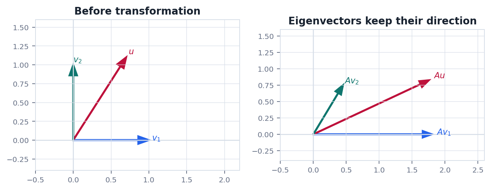
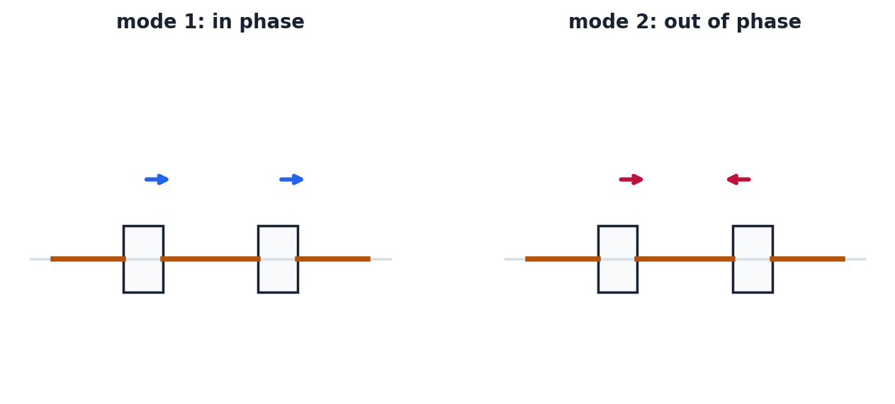

Route
0. 全章主线
特征向量揭示线性变换最自然的方向, 对角化则是在找最适合变换的坐标系.
不变方向方向不变, 只缩放.
特征方程求出可能的缩放倍数.
特征空间同一特征值下的全部方向.
对角化凑齐一组特征向量基.
应用递推, 振动, 稳定性.
Definition
1. 特征值和特征向量
特征向量是变换后仍落在原方向上的非零向量.
$$
Av=\lambda v,\quad v\ne0
$$
$\lambda$ 是伸缩倍数, $v$ 是不变方向. 这个定义不允许 $v=0$, 因为零向量在任何变换下都无法给出方向信息.
$$
(A-\lambda I)v=0\Rightarrow \det(A-\lambda I)=0
$$
特征多项式给出特征值候选, 再代回零空间求特征向量.
Diagonalization
2. 对角化为什么有用
如果能用特征向量作为基, 矩阵就会变成对角矩阵.
$$
A=PDP^{-1},\quad D=\operatorname{diag}(\lambda_1,\dots,\lambda_n)
$$
这意味着 $A$ 的复杂作用可以分成三步: 先换到特征向量坐标, 再按坐标独立缩放, 最后换回原坐标.
$$
A^k=PD^kP^{-1}
$$
矩阵幂, 线性递推和线性微分方程因此会大幅简化.
Condition
3. 什么时候不能对角化
有特征值不等于一定能对角化, 关键是能否凑齐一组特征向量基.
$n\times n$ 矩阵可对角化的核心条件是存在 $n$ 个线性无关的特征向量. 代数重数告诉一个特征值在特征多项式中重复几次, 几何重数告诉对应特征空间维数.
$$
1\le \dim E_\lambda \le \text{代数重数}(\lambda)
$$
常见误区重复特征值不是问题本身. 真正的问题是重复特征值下是否有足够多的独立特征向量.
Geometry
4. 几何图像: 不变方向和振动模态
特征向量在几何上是不变方向, 在物理上常对应系统的自然模态.


Physics
5. 物理问题: 正常模态和稳定性
很多振动问题都可以化成广义特征值问题.
问题小振幅机械系统常写成 $M\ddot x+Kx=0$. 令 $x(t)=u\cos(\omega t)$, 可得到广义特征值问题.
$$
Ku=\omega^2Mu
$$
$u$ 是振型, $\omega$ 是自然频率. 工程上需要避开外部激励频率接近自然频率的情况, 否则可能出现强烈共振.
Checklist
6. 实战清单与易错点
特征值题要把方程, 空间维数和应用含义连起来.
实战清单
- 矩阵是否方阵?
- 特征多项式是否算对?
- 每个特征值的特征空间维数是多少?
- 特征向量能否组成基?
- 物理问题里特征值代表频率, 增长率还是能量尺度?
高频错误
- 允许零向量做特征向量.
- 混淆代数重数和几何重数.
- 看到 $n$ 个特征值就不检查独立性.
- 忘记复特征值可能对应旋转或振荡.
记住特征向量是变换的自然方向. 对角化是用这些自然方向重写矩阵.